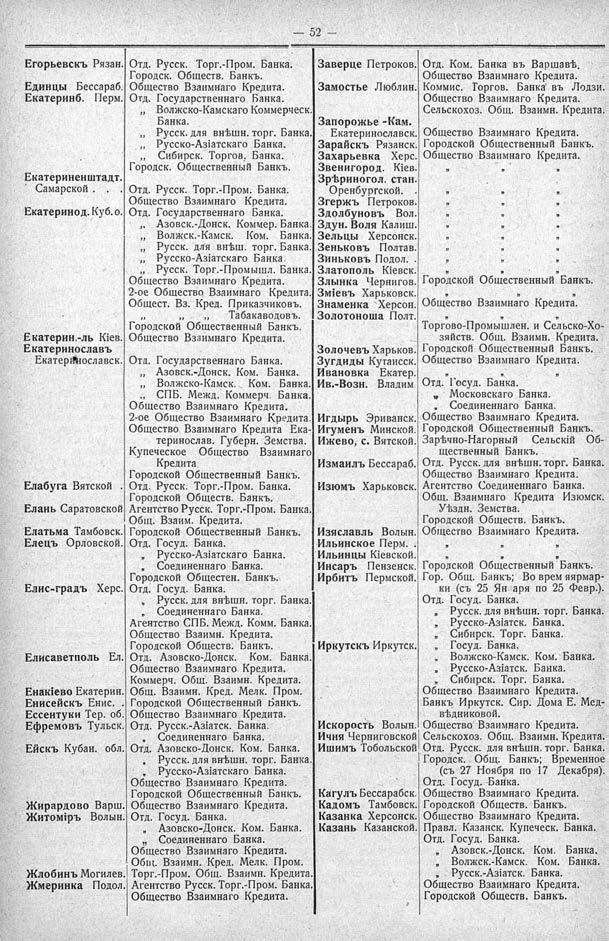

Лист источника 98
Скан

Распознанный текст
— 52 —
Егорьевскъ Рязан. Отд. Русск. Торг.-Пром. Банка.
Городск. Обществ. Банкъ.
Единцы Бессараб. Общество Взаимнаго Кредита.
Екатеринб. Перм. Отд. Государственнаго Банка.
„ Волжско-Камскаго Коммерческ.
Банка.
„ Русск. для внѣшн. торг. Банка.
„ Русско-Азіатскаго Банка.
„ Сибирск. Торгов. Банка.
Городск. Общественный Банкъ.
Екатериненштадт.
Самарской . Отд. Русск. Торг.-Пром. Банка.
Общество Взаимнаго Кредита.
Екатеринод. Куб. о. Отд. Государственнаго Банка.
„ Азовск.-Донск. Коммер. Банка.
„ Волжск.-Камск. Ком. Банка.
„ Русск. для внѣш. торг. Банка.
„ Русско-Азіатскаго Банка.
„ Русск. Торг.-Промышл. Банка.
Общество Взаимнаго Кредита.
2-ое Общество Взаимнаго Кредита.
Общест. Вз. Кред. Приказчиковъ.
„ „ Табаководовъ.
Городской Общественный Банкъ.
Екатерин.-ль Кіев. Общество Взаимнаго Кредита.
Екатеринославъ
Екатеринославск. Отд. Государственнаго Банка.
„ Азовск.-Донск. Ком. Банка.
„ Волжско-Камск. Ком. Банка.
„ СПБ. Межд. Коммерч. Банка.
Общество Взаимнаго Кредита.
2-ое Общество Взаимнаго Кредита.
Общество Взаимнаго Кредита Ека-
теринослав. Губерн. Земства.
Купеческое Общество Взаимнаго
Кредита.
Городской Общественный Банкъ.
Елабуга Вятской . Отд. Русск. Торг.-Пром. Банка.
Городской Обществ. Банкъ.
Елань Саратовской Агентство Русск. Торг.-Пром. Банка.
Общ. Взаим. Кредита.
Елатьма Тамбовск. Городской Общественный Банкъ.
Елецъ Орловской. Отд. Госуд. Банка.
„ Русско-Азіатскаго Банка.
„ Соединеннаго Банка.
Городской Обществен. Банкъ.
Елис-градъ Херс. Отд. Госуд. Банка.
„ Русск. для внѣшн. торг. Банка.
„ Соединеннаго Банка.
Агентство СПБ. Межд. Комм. Банка.
Общество Взаимн. Кредита.
Городской Обществ. Банкъ.
Елисаветполь Ел. Отд. Азовско-Донск. Ком. Банка.
Общество Взаимнаго Кредита.
Коммерч. Общ. Взаимн. Кредита.
Енакіево Екатерин. Общ. Взаимн. Кред. Мелк. Пром.
Енисейскъ Енис. . Городской Общественный Банкъ.
Ессентуки Тер. об. Общество Взаимнаго Кредита.
Ефремовъ Тульск. Отд. Русск.-Азіатск. Банка.
„ Соединеннаго Банка.
Ейскъ Кубан. обл. Отд. Азовско-Донск. Ком. Банка.
„ Русск. для внѣшн. торг. Банка.
„ Русско-Азіатскаго Банка.
Общество Взаимнаго Кредита.
Городской Общественный Банкъ.
Жирардово Варш. Общество Взаимнаго Кредита.
Житоміръ Волын. Отд. Госуд. Банка.
„ Азовско-Донск. Ком. Банка.
„ Соединеннаго Банка.
Общество Взаимнаго Кредита.
Общ. Взаимн. Кред. Мелк. Пром.
Жлобинъ Могилев. Торг.-Пром. Общ. Взаимн. Кредита.
Жмеринка Подол. Агентство Русск. Торг.-Пром. Банка.
Общество Взаимнаго Кредита.
Заверце Петроков. Отд. Ком. Банка въ Варшавѣ.
Общество Взаимнаго Кредита.
Замостье Люблин. Коммис. Торгов. Банка въ Лодзи.
Общество Взаимнаго Кредита.
Сельскохоз. Общ. Взаимн. Кредита.
Запорожье -Кам.
Екатеринославск. Общество Взаимнаго Кредита.
Зарайскъ Рязанск. Городской Общественный Банкъ.
Захарьевка Херс. Общество Взаимнаго Кредита.
Звенигород. Кіев. „ „ „
Зрѣриногол. стан.
Оренбургской. „ „ „
Згержъ Петроков. „ „ „
Здолбуновъ Вол. „ „ „
Здун. Воля Калиш. „ „ „
Зельцы Херсонск. „ „ „
Зеньковъ Полтав. „ „ „
Зиньковъ Подол. „ „ „
Златополь Кіевск. „ „ „
Злынка Чернигов. Городской Общественный Банкъ.
Зміевъ Харьковск. „ „ „
Знаменка Херсон. Общество Взаимнаго Кредита.
Золотоноша Полт. „ „ „
Торгово-Промышлен. и Сельско-Хо-
зяйств. Общ. Взаимн. Кредита.
Золочевъ Харьков. Городской Общественный Банкъ.
Зугдиды Кутаисск. Общество Взаимнаго Кредита.
Ивановка Екатер. „ „ „
Ив.-Возн. Владим Отд. Госуд. Банка.
„ Московскаго Банка.
„ Соединеннаго Банка.
Игдырь Эриванск. Общество Взаимнаго Кредита.
Игуменъ Минской. Городской Общественный Банкъ.
Ижево, с. Вятской. Зарѣчно-Нагорный Сельскій Об-
щественный Банкъ.
Измаилъ Бессараб. Отд. Русск. для внѣшн. торг. Банка.
Общество Взаимнаго Кредита.
Изюмъ Харьковск. Агентство Соединеннаго Банка.
Общ. Взаимнаго Кредита Изюмск.
Уѣздн. Земства.
Городской Обществ. Банкъ.
Изяславль Волын. Общество Взаимнаго Кредита.
Ильинское Перм. . „ „ „
Ильинцы Кіевской. „ „ „
Инсаръ Пензенск. Городской Общественный Банкъ.
Ирбитъ Пермской. Гор. Общ. Банкъ; Во врем яярмар-
ки (съ 25 Января по 25 Февр.).
Отд. Госуд. Банка.
„ Русск. для внѣшн. торг. Банка.
„ Русско-Азіатск. Банка.
„ Сибирск. Торг. Банка.
Иркутскъ Иркутск. „ Госуд. Банка.
„ Волжско-Камск. Ком. Банка.
„ Русско-Азіатск. Банка.
„ Сибирск. Торг. Банка.
Общество Взаимнаго Кредита.
Банкъ Иркутск. Сир. Дома Е. Мед-
вѣдниковой.
Искорость Волын. Общество Взаимнаго Кредита.
Ичня Черниговской Сельскохоз. Общ. Взаимн. Кредита.
Ишимъ Тобольской Отд. Русск. для внѣшн. торг. Банка.
Городск. Общ. Банкъ; Временное
(съ 27 Ноября по 17 Декабря).
Отд. Госуд. Банка.
Кагулъ Бессарабск. Общество Взаимнаго Кредита.
Кадомъ Тамбовск. Городской Обществ. Банкъ.
Казанка Херсонск. Общество Взаимнаго Кредита.
Казань Казанской. Правл. Казанск. Купеческ. Банка.
Отд. Госуд. Банка.
„ Азовск.-Донск. Ком. Банка.
„ Волжск.-Камск. Ком. Банка.
„ Русск.-Азіатск. Банка.
Общество Взаимнаго Кредита.
Городской Обществ. Банкъ.